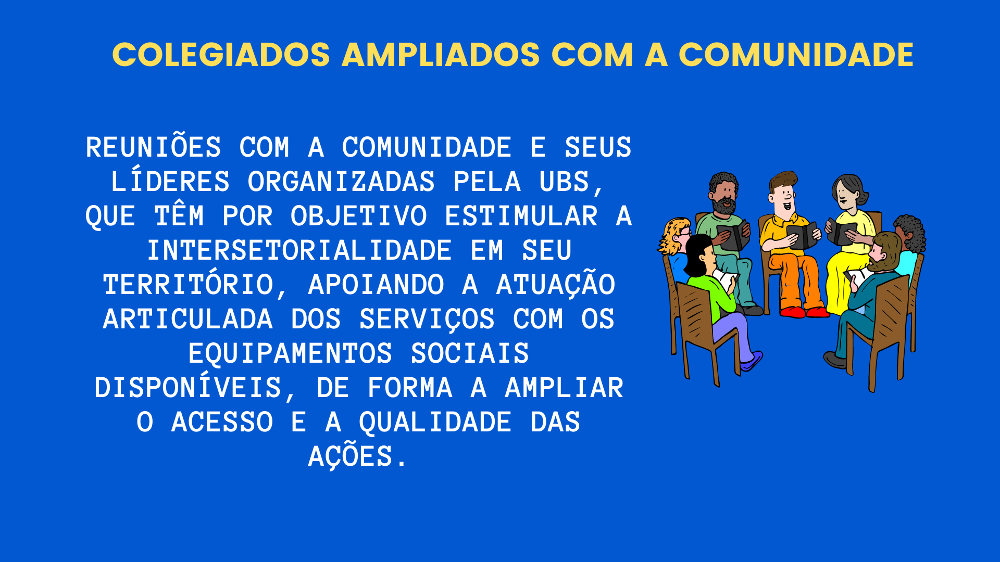
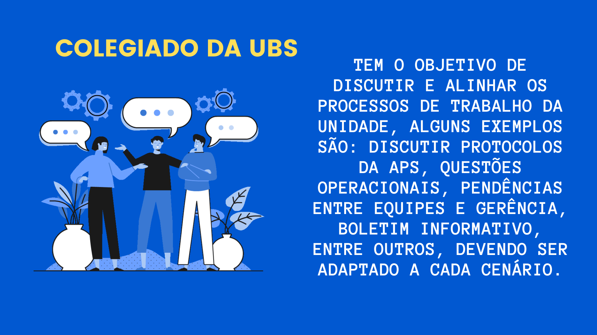
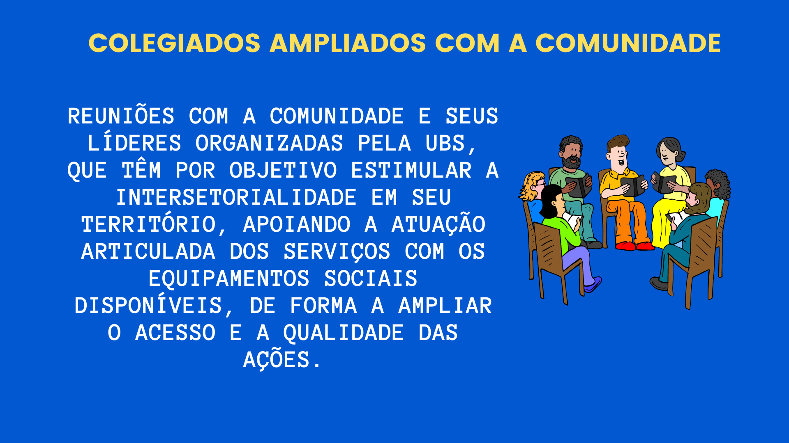
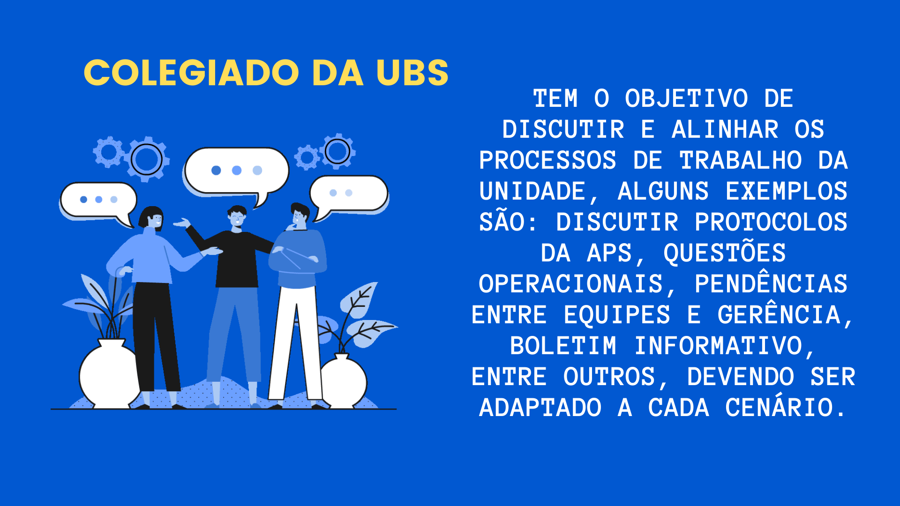

TÓPICO 3
OPERACIONALIZAÇÃO DA PROGRAMAÇÃO EM SAÚDE NA APS
TÓPICO 3
OPERACIONALIZAÇÃO DA PROGRAMAÇÃO EM SAÚDE NA APS

SAIBA MAIS
No Manual de Gerenciamento Local da APS do DF , constam algumas estratégias para organização do processo de trabalho, inclusive com uso de tecnologias para registro, operacionalização e monitoramento das ações planejadas.
Arraste as imagens para o lado e conheça as estratégias de gestão da programação local em saúde na APS.
 


